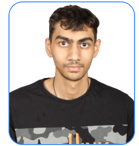

 I come from Bengaluru. I am 20 years old born on December 13. I am pursuing CSE IN AI/ML. I have a younger brother who currently studies in school. I have few hobbies. Some of them are productive while some are not. My hobbies include reading books, listening to music, playing outdoors and travelling. I have read several books since childhood like Percy Jackson, Harry Potter, Dan Brown and Geronimo Stilton. Currently I am reading the book Atomic Habits and Homo Sapiens.
I was born in Bengaluru but travelled to South Africa when i was in preschool. I stayed there for around 3 years in Johannesburg. During that time, I loved Dinosaurs and kept reading books and buying toys on Dinosaurs. I also visited the Krugar National Park where i saw many animals including Lions, Cheetah, Giraffes, Hippos,Deer and Rhinos. This is one of my core memories. i also traveled to Durban where there was a museum and many tourist attractions. I also visited the place where Gandhi was thrown off the train in South Africa. There are also many beaches in SA. I also went to watch the FIFA World Cup match.
I like travelling to new places and the idea of travelling is exciting to me. I like to study new Scientific topics revolving technology, science and economics. My favourite color is blue (and hence most of my webpage will be revolving around blue...). Apart from this i also like participatng in Hackathons and doing courses whenever I am not occupied with any task. I also spend time coding and have also made few projects on Web Developement.